Prototyping 3D Printing, Mock-Up Making, Hand Sketching
Languages
TurkishNative
EnglishC1
GermanB1
Honors & Awards
2023FURNITUR 2023 Prize & Mention — Türkiye Tasarım Vakfı
2023Graduation Awards 2nd Prize — Istanbul Technical University
2022Design for Export Finalist — OAİB & Ministry of Commerce
Professional Summary
Industrial Designer and Mechanical Design Engineer with experience developing products from concept to production. Skilled in CAD modeling, technical drawings, prototyping, and design for manufacturing. Comfortable working across design, engineering, and production.
Work Experience
Industrial Designer & Mechanical Design Engineer— TUS Metallbau
Jan 2024 – Present Paderborn, Germany
Design and develop balcony systems, canopies, railings, steel structures and glass facades, ensuring compliance with local engineering and building standards.
Create 3D models, assemblies and production drawings; formulate BOMs and support material procurement and production scheduling.
Carry out on-site measurements and incorporate site constraints into CAD models; optimize designs for manufacturing methods, tolerances and assembly.
Industrial Design Intern— TUS Metallbau
Jun 2023 – Dec 2023 Paderborn, Germany
Mechanical Design Engineer— ITU ROV Team
Aug 2022 – Jun 2023 Istanbul, Turkey
Designed watertight enclosures, structural chassis and mechanical mounting systems for ROVs; integrated components with underwater sensors and propulsion systems.
Represented ITU at the international MATE ROV Competition (Norway), securing 3rd place.
Product Design Intern— Robotistan
Feb 2022 – Aug 2022 Istanbul, Turkey
Developed Arduino-based educational robotic kits from concept to physical prototypes; designed injection-molded enclosures, snap-fits and mechanical linkages.
Created product renderings and technical illustrations for assembly manuals.
Education
B.Sc. Industrial Design— Istanbul Technical University
2018 – 2023 GPA 3.46 / 4.00
Specialized in user-centered product development, product sketching, physical prototyping and CAD modeling. Developed multiple design projects from initial research and ideation to manufacturing preparation.
An autonomous underwater vehicle where hydrodynamic form and FDM manufacturing constraints were resolved as one design problem — not in sequence.
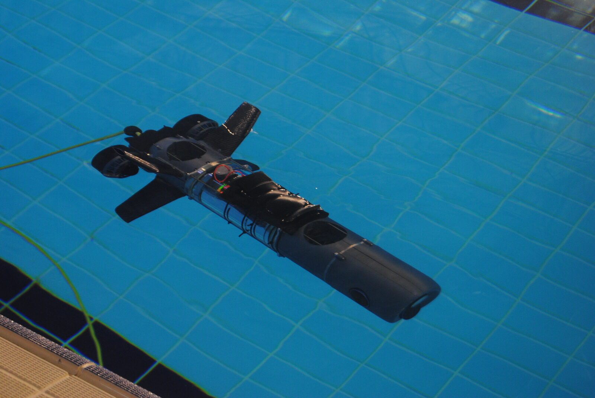
Key decision
Torpedo–blowfish hybrid geometry reduces drag in forward motion while maintaining a flat reference face for FDM bed adhesion. Zero support material on the primary hull.
Placeholder — describe the sketch exploration that led to the torpedo–blowfish hull form: early hand studies, form alternatives considered, and the reasoning that narrowed the direction.
Pioneer: Form Decision
Pioneer MKIIForm Decision
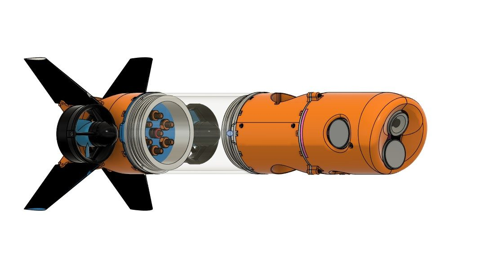
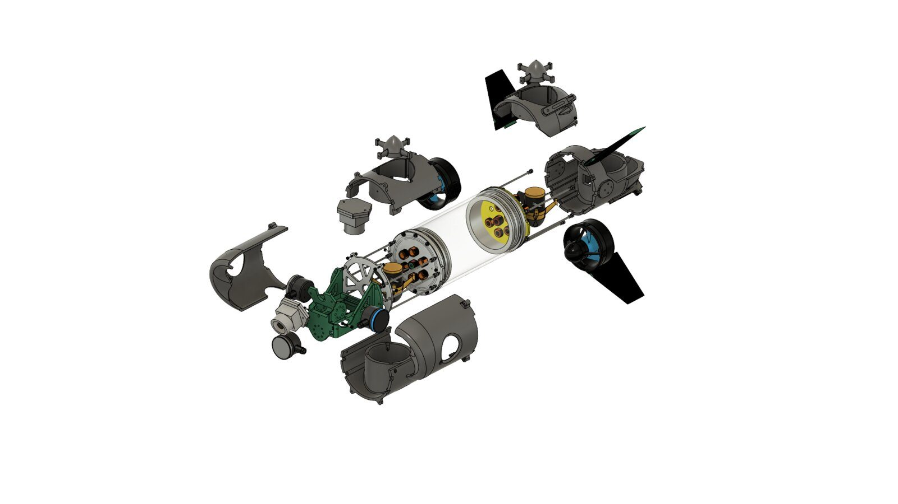
02 — Form strategy
Torpedo meets blowfish
The nose tapers for hydrodynamic entry. The mid-section swells to maximise internal volume for electronics and ballast. This is not aesthetic — it is an engineering argument made visible in the outer surface.
FDM constraint resolved
The flat underside reference face means the entire hull prints without support material. One geometry solves hydrodynamics and manufacturability simultaneously.
HullFDM — PETG, 3-shell perimeter
Sections4 watertight compartments, O-ring sealed
AssemblyBayonet end caps, tool-free access
Pioneer: Engineering Detail
Pioneer MKIIEngineering Detail
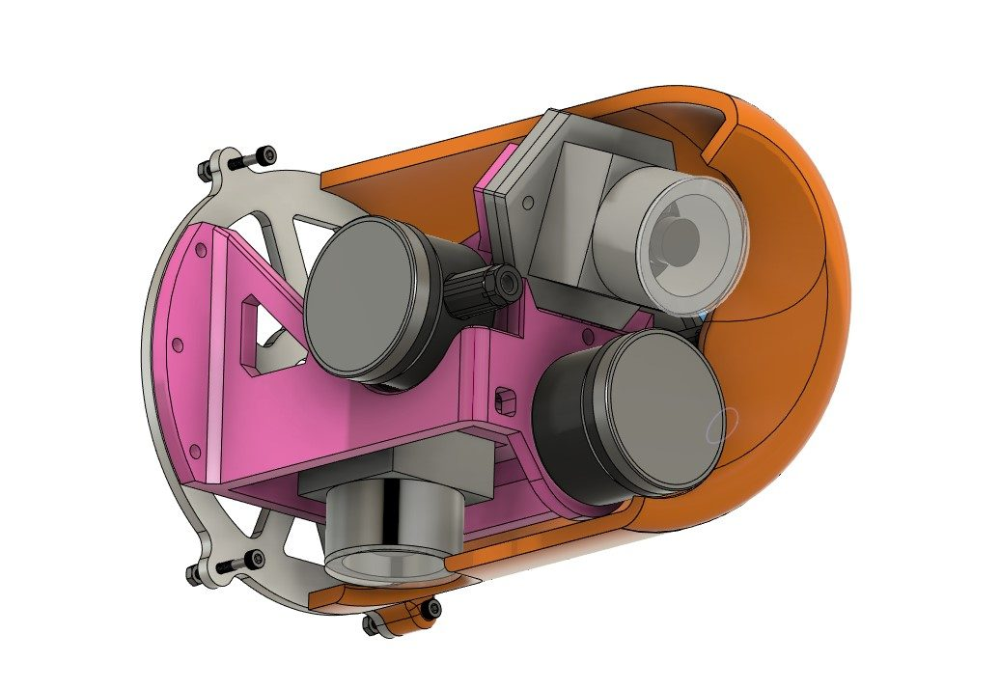
Integrated bracket — cable routing included
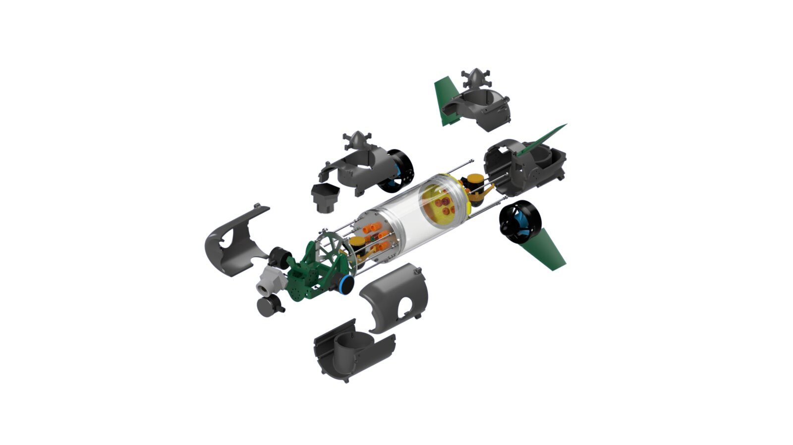
Full component assembly
Design decisionAll internal brackets printed as single pieces with integrated cable routing channels. No secondary hardware beyond the O-ring sealed end caps — assembly complexity driven to zero.
Pioneer: Additional Detail (placeholder)
Pioneer MKIIBuilt Hardware
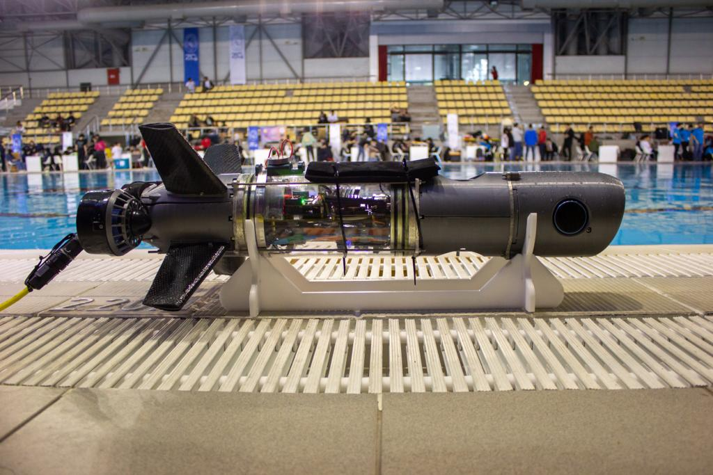
Poolside on the stand, carbon fins and sealed mid-section
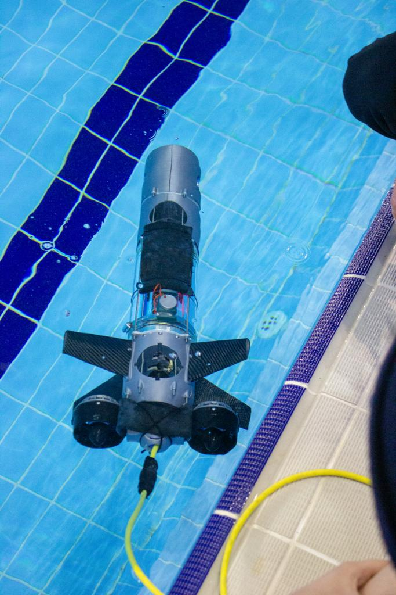
In the water, tether attached
Physical buildThe printed hull carries carbon fiber fins and a transparent electronics section. Both photos are from the competition pool. This is the built vehicle, not a render.
Pioneer: Pool Test & Award
Pioneer MKIIPool Test · TEKNOFEST 2023
Buoyancy verification — Hydraulics Lab, ITU
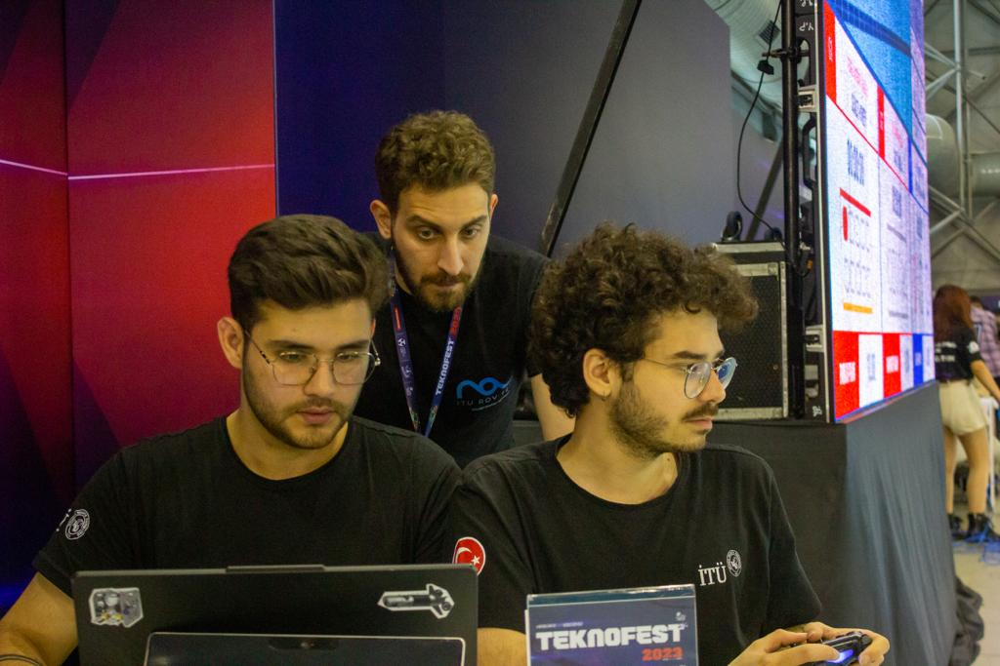
TEKNOFEST 2023 — Design & Presentation Award
TEKNOFEST 2023Design & Presentation Award. Evaluated on engineering documentation, design rationale, and physical prototype quality — competed nationally against 40+ teams.
Rockhounder
Rockhounder
Recreational Design · Product + App System · Soft Goods
Rock- hounder
Product and app proposal for recreational rock collecting. A specialist bag system — outer carry bag plus an inner tool bag that lifts out on-site — paired with a companion app. ITU 2nd Best Graduation Project.
The system
No off-the-shelf bag addresses rock collecting as a system. Rockhounder proposes two interlocking pieces: the main bag stays at camp while the inner tool bag is carried to the extraction site, keeping specialist tools accessible and the main load stable.
ITU
2nd Best Graduation Project · İTÜ Industrial Design
Placeholder — describe the sketch exploration of pack silhouettes and strap routing alternatives before the harness-compatible yoke was settled on.
Rockhounder: Research
RockhounderResearch & Problem
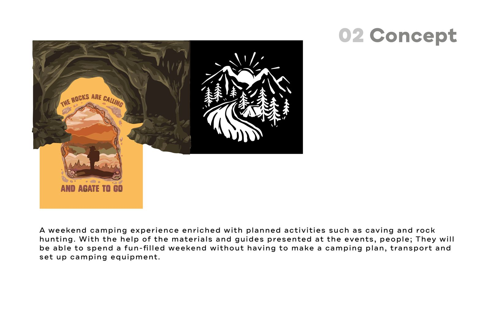
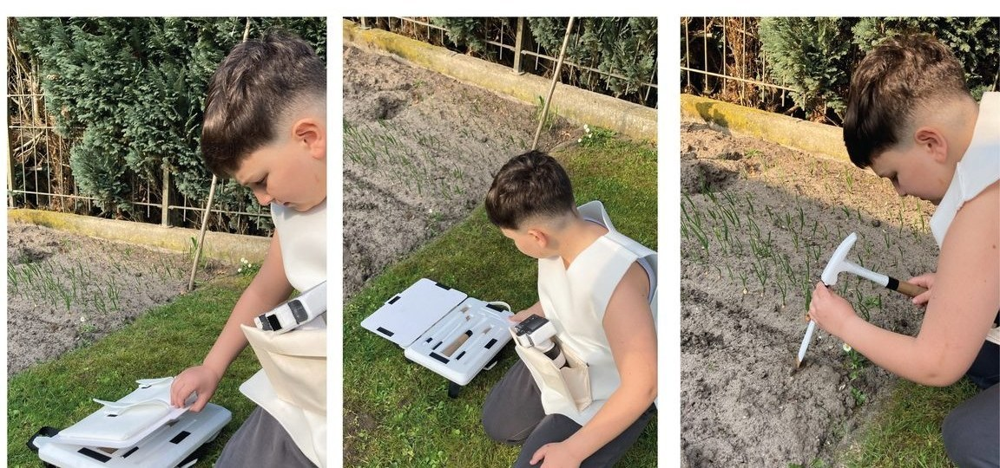
02 — Research
Harness first, bag second
Field observation with sport climbers revealed every existing pack was designed for hiking — then adapted for climbing. The harness is the primary wearable. The pack is secondary. The design process reversed this hierarchy.
Friction points identified
Hip belt vs. harness leg loops. Lid access while roped up. Gear loops blocked by shoulder straps. Each became a design criterion — not a trade-off.
UsersSport climbers, via ferrata, crag day trips
PrimaryWearable while harnessed and roped
AccessTop lid + front panel, single-handed
Rockhounder: Construction
RockhounderPattern & Construction
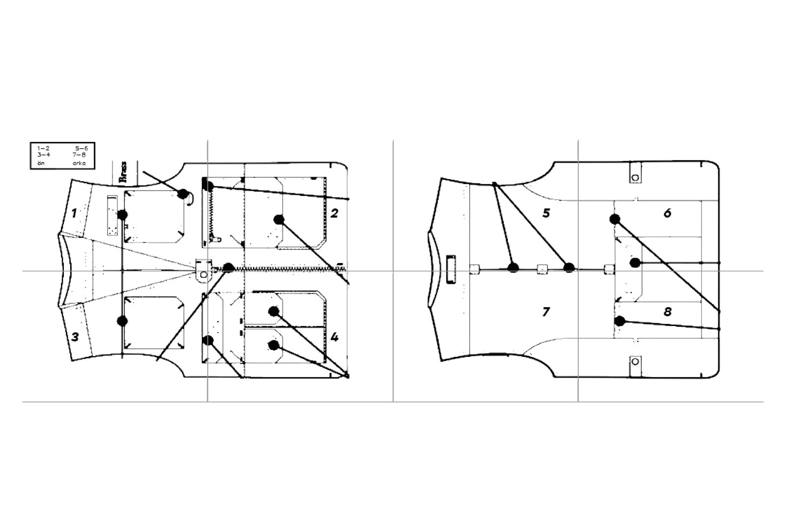
Full-scale pattern — all pieces
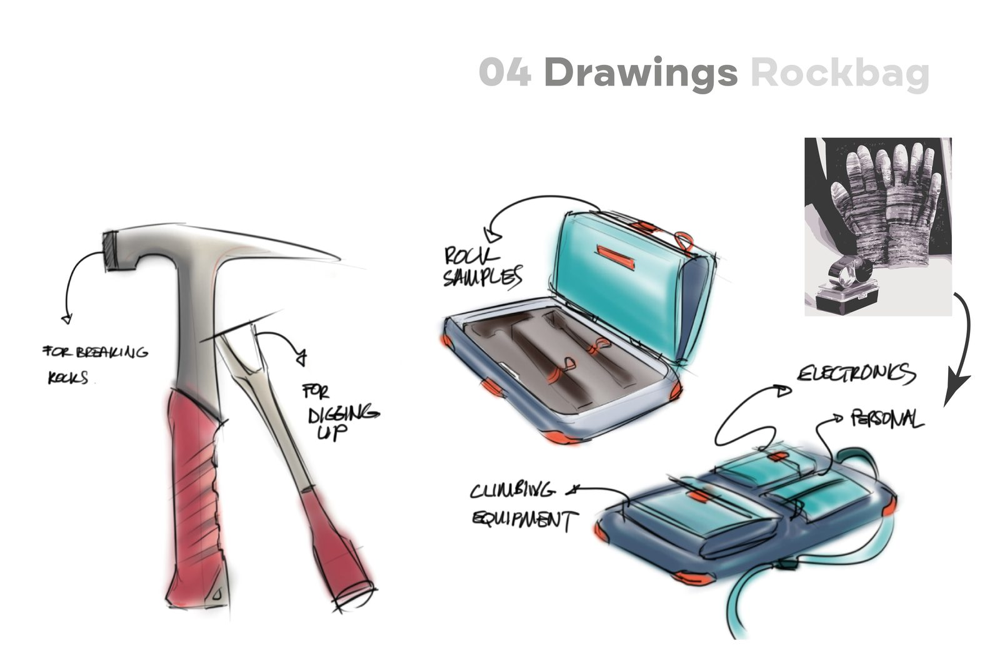
Compartment layout & dimensions
ConstructionAll pattern pieces drawn to scale. Load paths verified at seam intersections before sewing — stress points reinforced with bartack stitching at every junction.
Rockhounder: Additional Detail (placeholder)
RockhounderAdditional Detail
PlaceholderOpen slot — add materials, hardware detail, fitting sessions, or any other Rockhounder content not yet covered.
Rockhounder: Result
RockhounderFinal Prototype
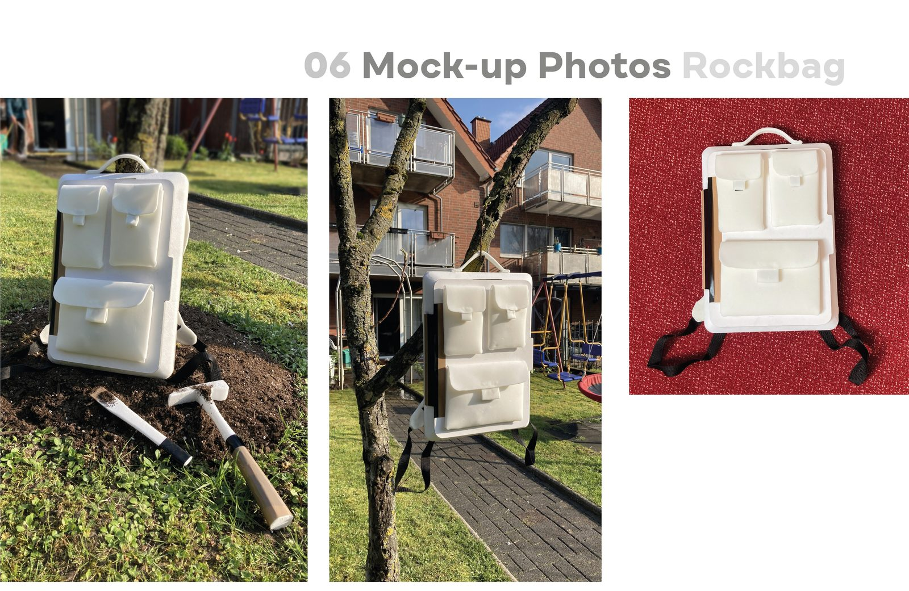
Sewn prototype — full scale
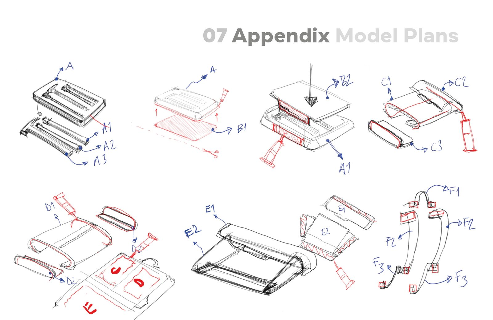
Final production documentation
OutcomeFully functional sewn prototype — tested on-body with harness. Hip belt eliminated, shoulder load path rebalanced. ITU jury recognition for ergonomic rigour.
REX Mini Tank
REX
Product Design · Education · Coding
REX Mini Tank
A line-following, obstacle-avoiding mini tank designed to teach children coding through a real product. The goal: show kids how design and engineering connect to the physical world — through a toy they can build and program.
Scope
Full product design and assembly catalog. Ultrasonic distance sensors, line-following logic, modular chassis. Assembly documentation designed for classroom use — step-by-step, no prior knowledge assumed.
Education
Product design + assembly catalog — designed by Bedirhan
Placeholder — describe the early sketch exploration of track-drive layouts and sensor placement before the final chassis geometry was chosen.
REX: Iteration
REX Mini TankDesign Iteration
02 — Prototype to product
Three generations
The first iteration established the track-drive geometry. The second resolved the waterproofing strategy. The third locked tolerances, fastener types, and final seal geometry for production.
Key revision
Switched from single gasket to dual O-ring groove at every panel joint. Field feedback from the first batch drove this decision — single gaskets degraded after UV exposure.
DriveDual tank tracks, independently driven
SealingDual O-ring at all access panels
HousingLayered acrylic + ABS chassis
REX: Assembly
REX Mini TankAssembly Documentation
03 — Documentation
Built to be rebuilt
The assembly guide was developed in parallel with the product — not after. Sequence, seal inspection steps, and connector orientation all documented before production began.
DFA principle
Component families consolidated to reduce unique part count. Keyed connectors eliminate assembly errors. Tool-free panel access for field maintenance.
AccessTool-free panel removal, keyed connectors
DocsBOM + assembly sequence + seal guide
REX: Additional Detail (placeholder)
REX Mini TankAssembly Catalog Pages
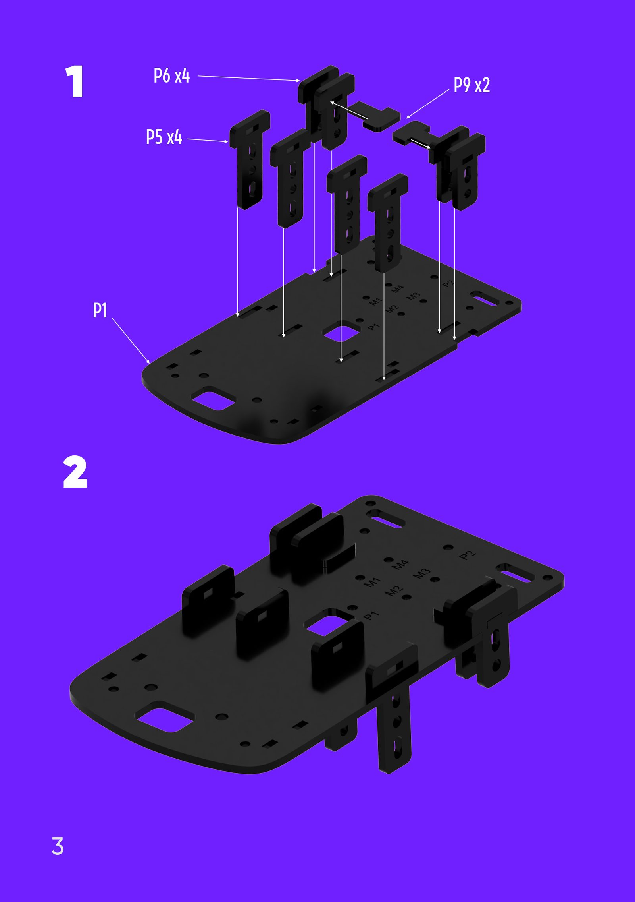
Steps 1–2, panel brackets onto the base plate
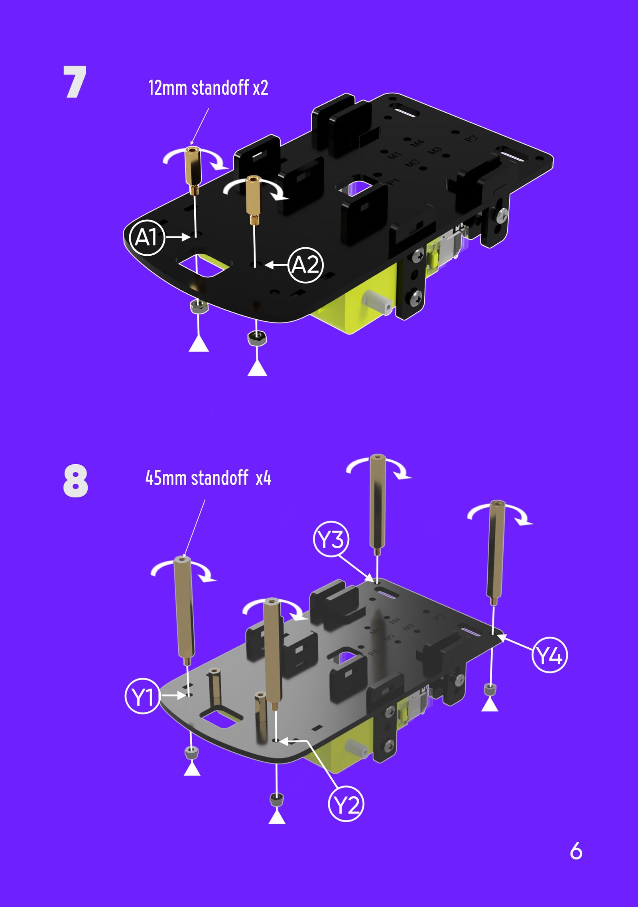
Steps 7–8, standoffs with keyed positions
Catalog designPages from the printed assembly catalog. Every part is coded (P1, A1, Y1), every step shows one action, and rotation arrows carry the instruction without a single sentence of text.
REX: Final
REX Mini TankFinal Design
ShippedREX went into production. Acrylic chassis layers expose internal component layout while maintaining structural integrity. Commercial product — not a student project.
Convertible furniture for space-constrained users, combining work and play in a single piece. A single telescopic hinge drives the full transition — no separate parts.
The problem
Users with limited living space need furniture that shifts between a work mode (desk + upright seat) and a play/leisure mode (reclined + footrest). Delta solves this with a single sliding joint — no additional hardware required.
Placeholder — describe the sketch exploration of multi-position seating mechanisms before the single telescopic hinge concept was identified as the simplest solution.
Delta: Mechanism
DeltaMechanism Detail
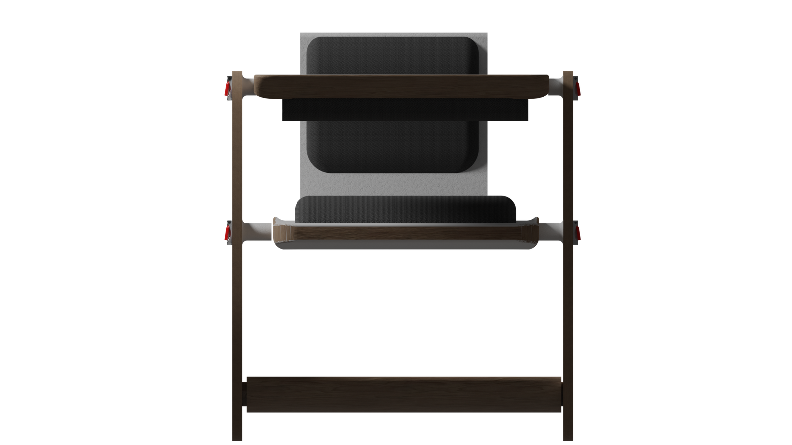
02 — Single-hinge logic
One joint, three states
A telescopic sliding connection allows simultaneous angular and linear displacement along a single axis — backrest angle and seat depth change together, driven by one motion, locking at three discrete positions.
Locking geometry
Red-tipped locking pins engage at three backrest angles. Pin geometry designed so that body weight tightens the lock — no spring-loaded release, no fatigue failure mode.
PositionsWork · Upright · Reclined
JointSingle telescopic sliding hinge
BodyPlywood / hardwood — no secondary mechanisms
Delta: Scale Prototype
Delta1:5 Scale Prototype
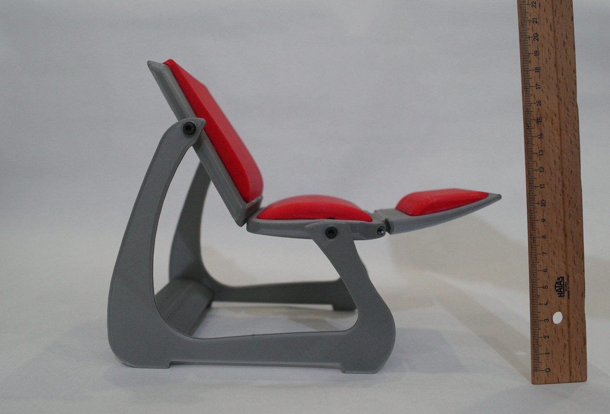
03 — Verification
Mechanism first
Before committing to full-scale fabrication, the mechanism was validated at 1:5 scale in FDM. The model confirmed all three locking positions were reachable and that the joint self-locked under simulated load.
What the model revealed
Pin clearance at the reclined position was too tight at 1:5 — identified before full-scale build and corrected in CAD. The scale model found the problem, not the final prototype.
Scale1:5 — all joint proportions maintained
MethodFDM — PLA, 0.15 mm layer height
Delta: Additional Detail (placeholder)
DeltaWork Mode & Exhibition
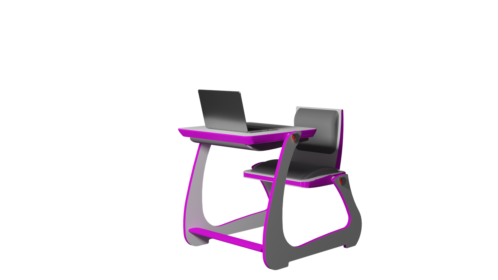
Working position, desk surface in use
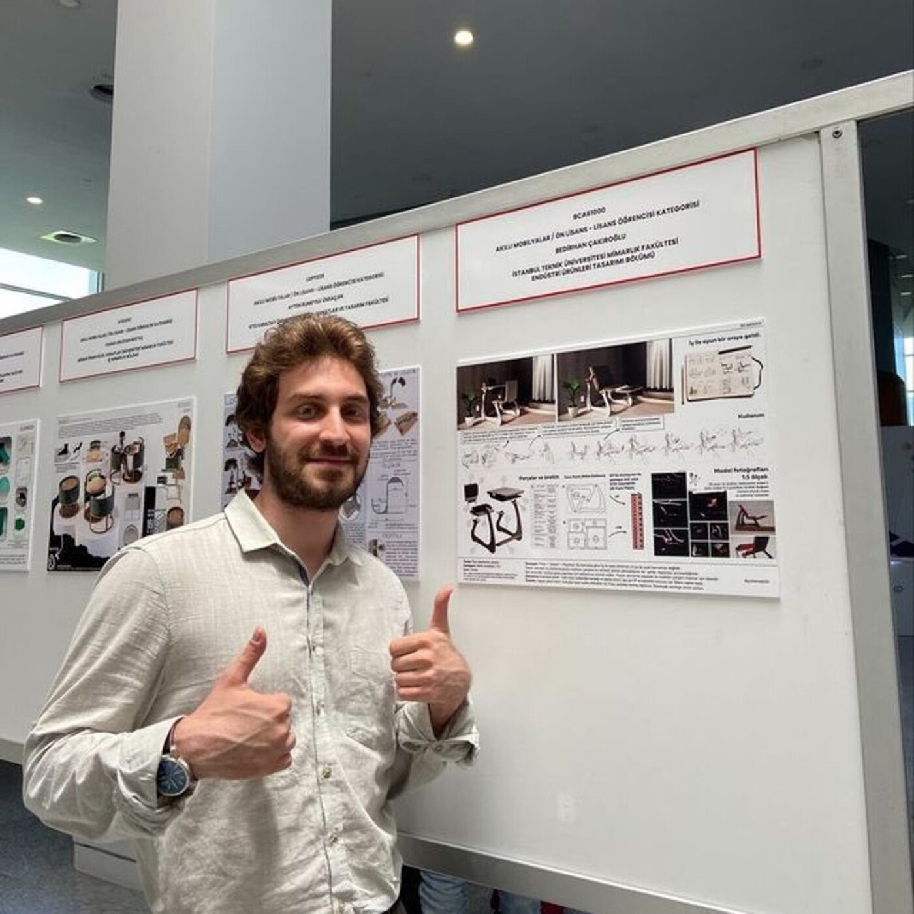
Competition board at the exhibition
Design for ExportFinalist in the smart furniture student category. The exhibited board summarises the mechanism story: use positions, parts and production, and 1:5 scale model photographs.
Delta: Final
DeltaFinal Design · Design for Export Finalist
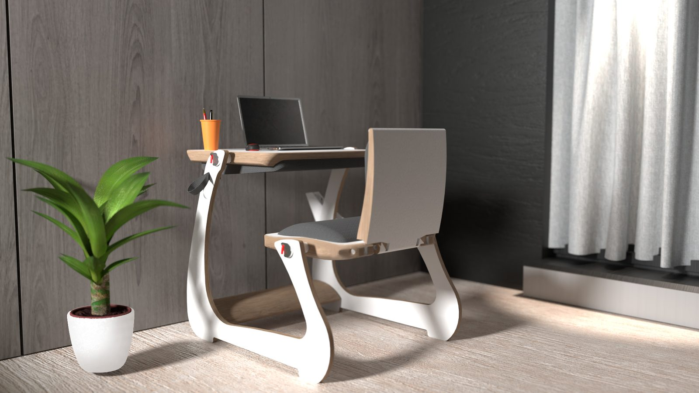
Working position
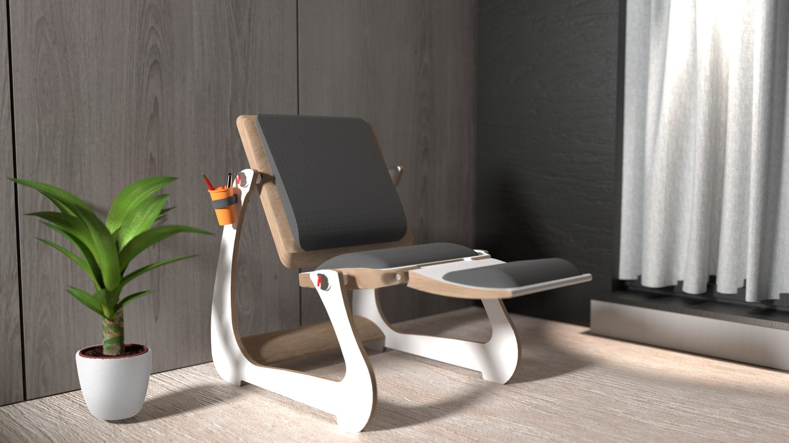
Reclined position
Design for ExportFinalist — OAİB & Ministry of Commerce. Evaluated on export viability, engineering documentation, and design originality. The mechanism was the differentiator.
Electric Razor Redesign
Electric Razor Redesign
Consumer Electronics · Reverse Engineering · DFM
Electric Razor Redesign
A premium shaving adapter system that began with a teardown, not a brief. Before sketching, every competitor was disassembled, documented, and mapped — constraints defined before form explored.
Method
Competitive teardown first, then design. This reverses the typical process. The charging dock geometry was the last decision — not the first.
RoleSolo — research through production-ready model
ToolsRhino (model) · KeyShot (render)
Electric Razor: Sketch / Ideation
Electric Razor RedesignSketch / Ideation
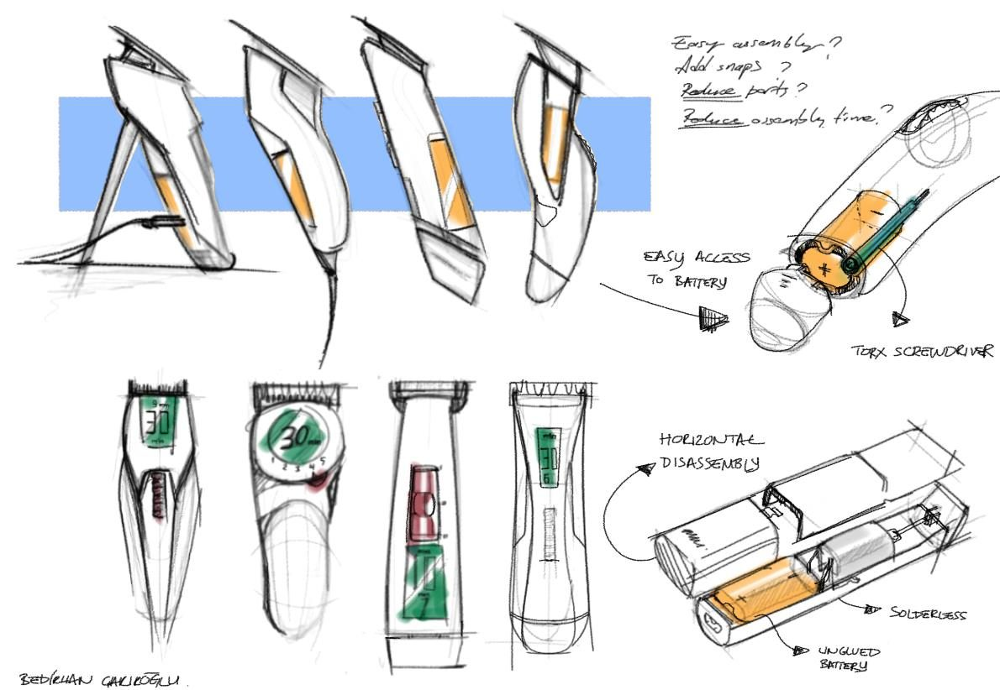
01 — Ideation
Sketching for disassembly
Form alternatives annotated with the questions that drove the redesign: fewer parts, snap assembly, tool-free battery access, horizontal disassembly. The teardown findings are written directly onto the sketches.
Electric Razor: Teardown
Electric Razor RedesignCompetitive Teardown
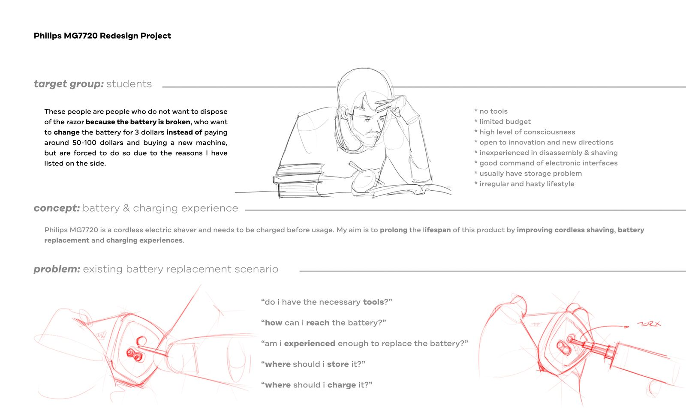
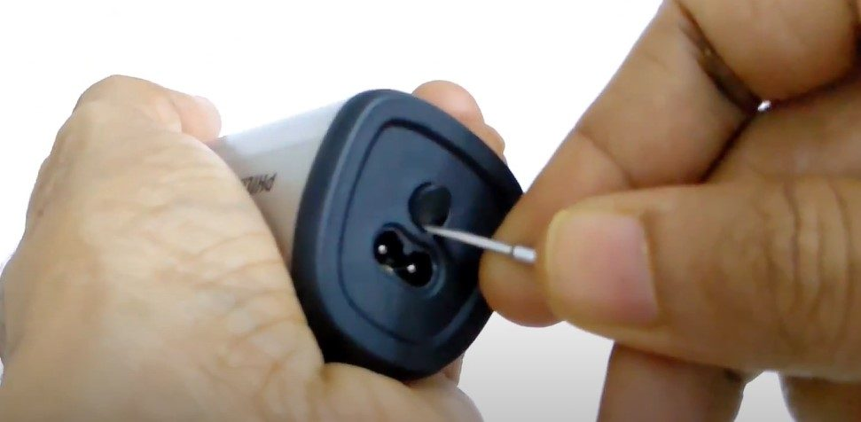
02 — Starting point
Disassemble first
Before a single sketch, competing products were opened, measured, and mapped. The teardown revealed shared failure points: the adapter locking mechanism and charging contact arrangement — both addressed in Razor.
Key finding
All competitors used spring-friction locking. Razor uses a quarter-turn bayonet — positive engagement, single-handed operation, no spring fatigue failure mode.
MethodFull disassembly + dimensional mapping
FailuresLocking, charging contact, seal degradation
ResponseBayonet lock, magnetic charge, dual O-ring
Electric Razor: Form Development
Electric Razor RedesignForm Development
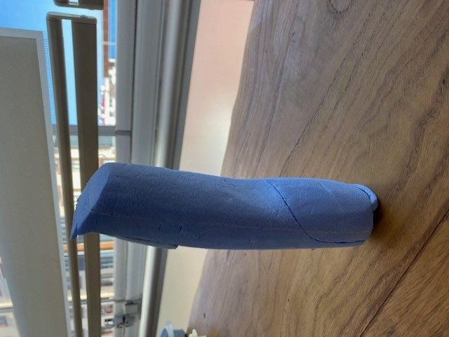
Early foam — grip ergonomics
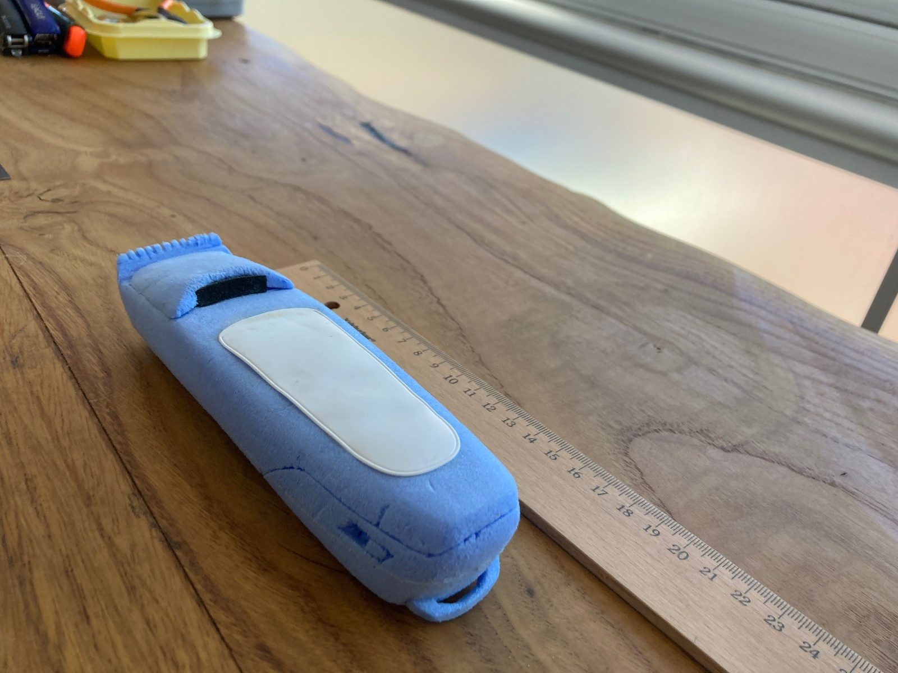
Final foam — production geometry
IterationGrip diameter and thumb saddle geometry iterated through multiple foam generations before CAD. Hand feel defined in foam — then locked into SolidWorks with tolerances.
Electric Razor: Additional Detail (placeholder)
Electric Razor RedesignAdditional Detail
PlaceholderOpen slot — add charging dock detail, waterproofing test, or any other Electric Razor Redesign content not yet covered.
Electric Razor: Final
Electric Razor RedesignFinal Design
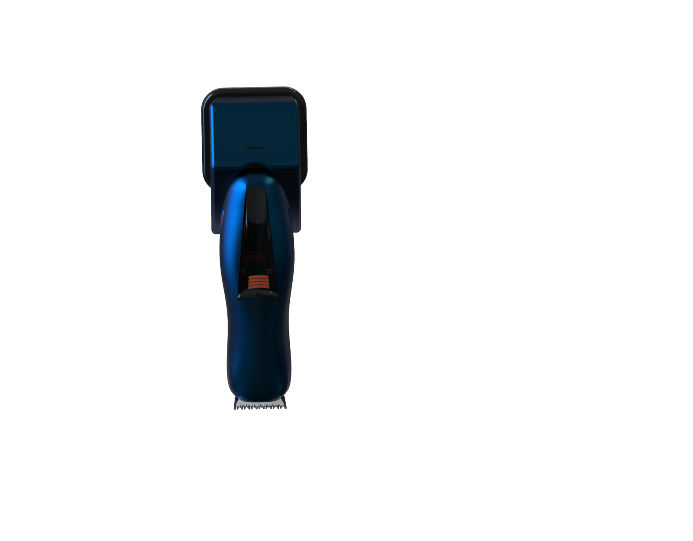
Charging dock — magnetic contact
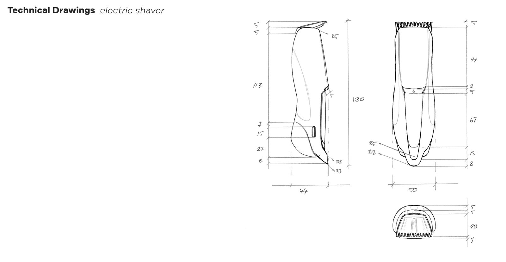
Production-ready technical drawing
OutcomeProduction-ready documentation: 3D model, technical drawings, BOM, and assembly sequence. Bayonet lock, magnetic charging, tool-free battery access.
Section Divider
Section 02
Other Selected Work
Projects outside the five flagships — shown briefly. Each represents a different design method: service design, urban systems, material craft, and jury-evaluated studio work.
Herptile
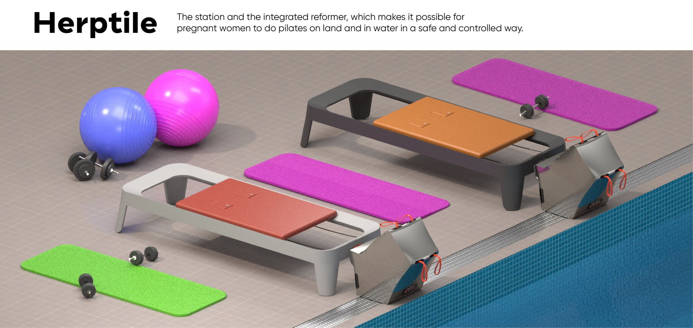
Herptile
Pregnancy Pilates Station
A pilates reformer and coaching system designed for safe exercise during pregnancy — spanning sheet-metal engineering, a customer journey map, and app-based guidance as one product-service system.
Sheet MetalService DesignFull CAD
Herptile: Sketch / Ideation
HerptileSketch / Ideation
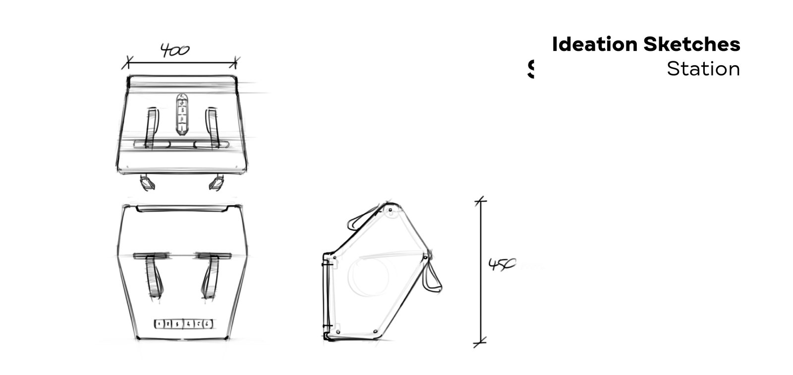
01 — Ideation
Drawn to dimension
Dimensioned studies of the station body. Strap routing and control placement were explored on paper before any CAD, with target sizes noted directly on the sketch.
Herptile: Additional Detail (placeholder)
HerptileStructure & Service
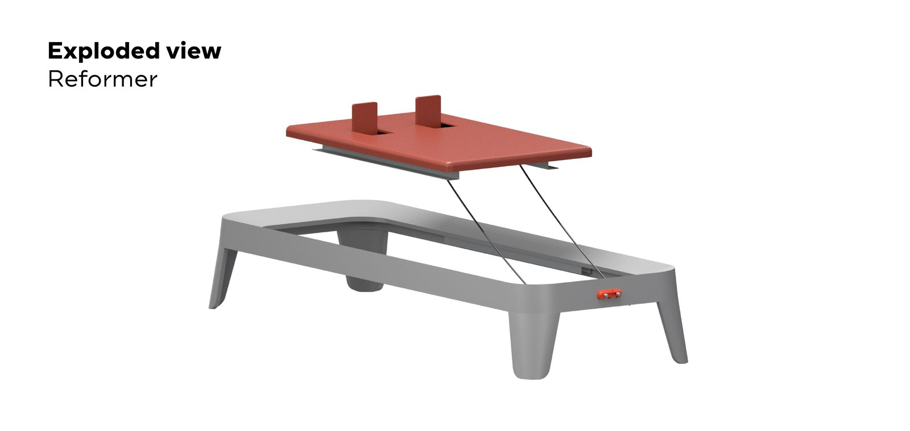
Reformer exploded view, carriage and frame
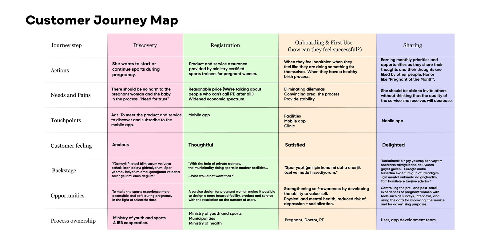
Customer journey map, discovery to sharing
Product-service systemThe reformer and the service were designed together. The journey map ties facility, mobile app and clinic touchpoints to the same product decisions carried through CAD.
Urn
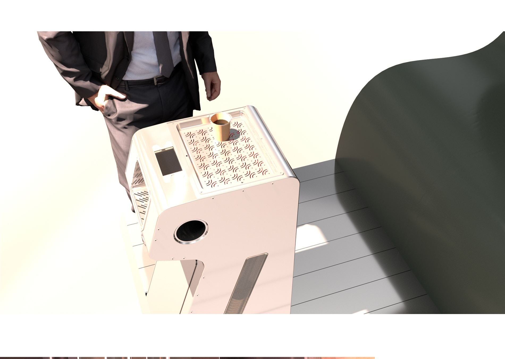
Urn
Hot Drink Station for the Neighborhood
Starting from tea's role as a conversation starter in Turkish culture, this transit-card-operated station is an urban product system aimed at strengthening everyday neighborhood meeting points.
AEIOU ResearchUrban SystemProduction BOM
Urn: Sketch / Ideation
UrnSketch / Ideation
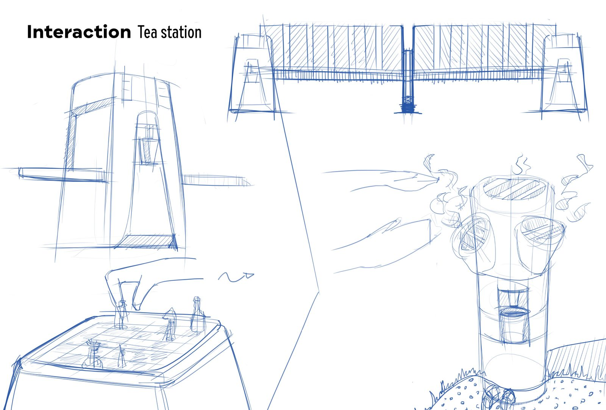
01 — Ideation
Tea as a meeting point
Interaction sketches for the station: the serving body, a built-in chess surface, and the tea glass itself. The drawings work out how people gather around the station, not just how it looks.
Urn: Additional Detail (placeholder)
UrnProduction Details
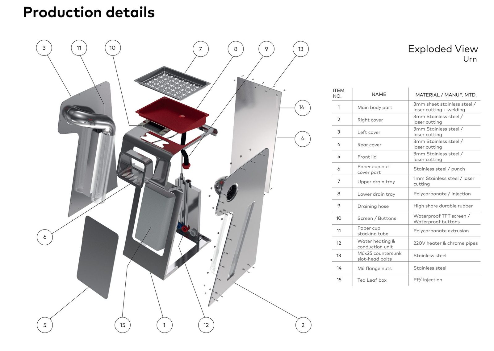
BOMFifteen numbered parts, each with material and manufacturing method: laser-cut 3 mm stainless body panels, injection and extrusion polycarbonate parts, and a 220 V heating unit.
Retroscent
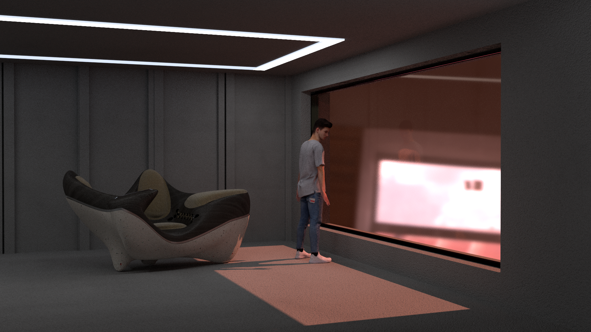
Retroscent
Furniture for 2050 Scenarios
Furniture design responding to changing 2050 world scenarios, integrating aromatherapy as a sensory and emotional layer into organic mixed-material form.
FurnitureAromatherapy2050 Scenarios
FURNITUR 2023Prize & Mention — Türkiye Tasarım Vakfı
Placeholder — describe the organic form studies and how aromatherapy integration was explored in response to FURNITUR 2023's brief on changing 2050 world scenarios.
Retroscent: Additional Detail (placeholder)
RetroscentMaterial Detail
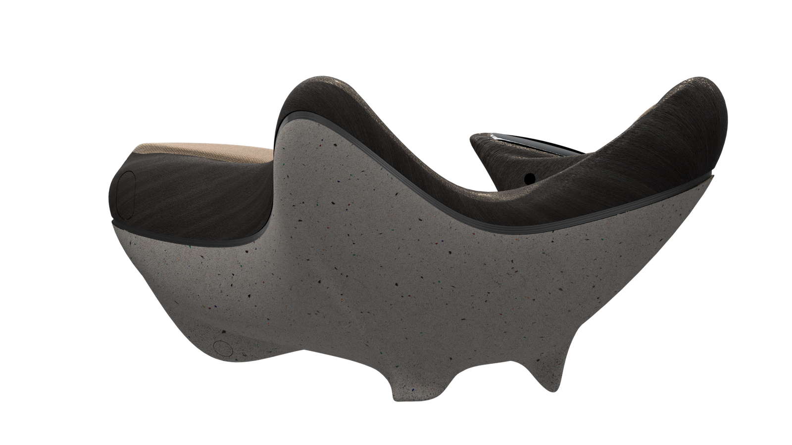
Detail render, rear quarter
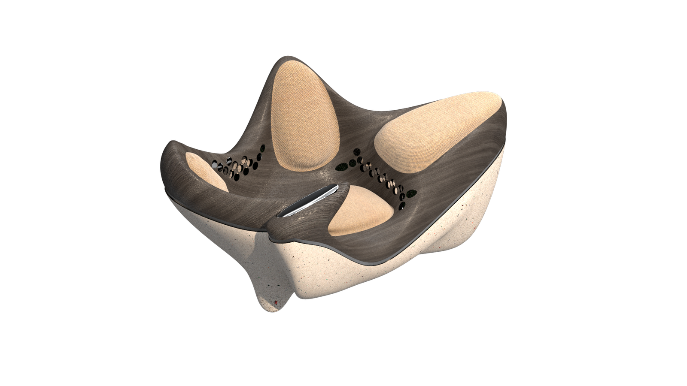
Detail render, seat surfaces
MaterialsMixed-material composition in close-up: speckled cast base, wood-grain shell, fabric seat pads and perforated transitions between them, resolved as one continuous form.
Spiegelau
Spiegelau
White Wine Set Design
A three-piece white wine set — chiller, flute, and coupe — developed through Rhino surface modelling with full technical drawings for production.
Rhino SurfacingGlasswareTechnical Drawing
Spiegelau: Sketch / Ideation
SpiegelauSketch / Ideation
01 — Ideation
One set, three vessels
Profile ideation for the white wine set, drawn light on dark. Stem, bowl and foot variations were compared side by side before surface modelling; a carafe study sits alongside the glasses.
Spiegelau: Additional Detail (placeholder)
SpiegelauTechnical Sections
DimensionsProfile sections drawn to dimension. Heights, foot diameters, rim and base radii are locked on the section before any surface modelling begins.
Kickboard
Kickboard for Children
Studio Project, Final Jury
A kickboard designed for children learning to swim, developed across a full studio semester from concept sketches through final jury renders and a presentation model.
Studio ProjectPhysical ModelFinal Jury
Kickboard: Development
Kickboard for ChildrenProcess — Model to Render
Physical presentation model
Use scenario render
ProcessDeveloped across five studio milestones — concept sketches, first jury feedback, ergonomic refinement, and final presentation renders and model.
Kickboard: Sketch / Ideation
Kickboard for ChildrenSketch / Ideation
01 — Ideation
Kick types drive the form
The concept sheet maps four kick types around a smart metronome kickboard for children. Swimmer studies define where the board sits in the water for each stroke, drawn next to the first board form sketches.
Automotive Design
Automotive DesignCoursework — Redesign Sketches
Citroën Ami — sport redesign study
Citroën Ami — form language sketch
CourseworkIntroduction to Automotive Design — digital sketch overpainting exercises exploring proportion, surface language, and brand redesign on existing production vehicles.
CourseworkInterior layout sketching and historical vehicle analysis — part of a semester-long automotive design elective, included here for range rather than depth.
CourseworkA two-page Range Rover Evoque study: the existing seat and console packaging drawn see-through, then a redesigned interior proposed inside the same body.
Awards & Recognition
Summary
Awards & Recognition
2023
TEKNOFEST
Design & Presentation Award — Pioneer MKII
2023
FURNITUR 2023
Prize & Mention — Türkiye Tasarım Vakfı, Retroscent